Tutorials
A - Correct segmentation and tracking results from TrackMate
This tutorial gives an example on how to correct the segmentation and tracking results obtained after using TrackMate on an epithelia movie.
You can follow it with your own data, or using the test data available in the github repository, selecting the movie 013_crop.tif and the corresponding TrackMate file 013_crop_witherrrors.xml.
A1 - Load the raw movie and TrackMate file
Start Napari, and then EpiCure by going to Plugins>Epicure>Start epicure.
A panel opens in the right side, where you can select the raw movie by clicking the Select file button on the top right.
Chosse the raw movie (013_crop.tif).
The movie is loaded and the metadata are read and displayed in the right panel. Check that the extracted values are correct, or change them if necessary.
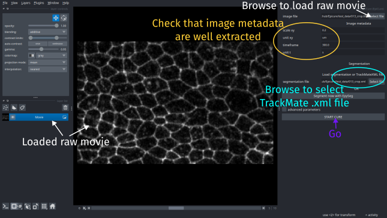
Then to load the TrackMate results, select the .xml file (013_crop_witherrrors.xml) in the segmentation_file parameter of the interface and click on Start cure.
The segmentation and tracking information will be loaded. The cells are displayed as labels (colors). Each track correspond to one label (color).
A2 - Detect potential segmentation or tracking errors
You can navigate through the movie to find segmentation errors, or use the automatic function to highlight potential errors.
For this, go the the Inspect tab of the right panel.
In Track options, select Flag track merging, Flag track apparition and Flag track disparition.
Select Ignore cells on: tissue boundaries at the top of the panel to avoid the border effect and don't check track apparition or disparition for cells at the border.
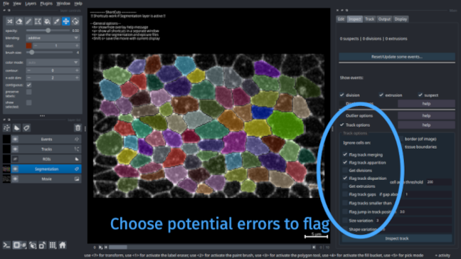
Pontential errors are indicated with white cross on the position of the error, which can be due to segmentation or tracking.
A3 - Check manually and correct true errors
A3a - Navigate through the potential errors
To go through all detected errors, press Space. It will move to the position of a first error and zoom on it. On your Terminal window, a message indicating why this point was flagged has potentially erroneous is printed. Each time you press Space, it will go to the next error.
A3b - Correct true errors
Go to the two errors at frame 5 toward the bottom of the movie (see figure below). You can see that the cell present at frame 4 is wrongly splitted in two cells at frame 5 and detected again as one cell in frame 6.
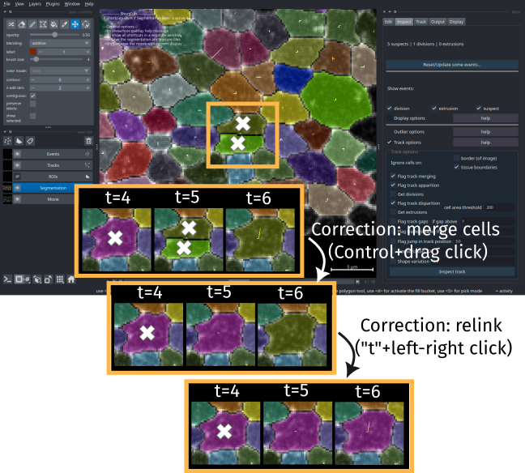
To correct this, at frame 5, press Control (Command on MacOS) and click with the left mouse button from the first to the second cell to merge together. The two cells will be merged as one cell, labelled with the previous cell (from frame 4) number as the program tries to automatically relink the cells.
It will also try to relink the cells in the next frame. Here, you can see that it didn't work and the next frame cell is not linked to the new cell and has another label (color). To correct, that press t and do a left click on the cell at frame 5 then a right click on the same cell at frame 6 to link them together.
The error has been corrected. You can remove the flags by pressing Control+Alt (Command+Option on MacOS) and right clicking on the cross if you want to clean it while correcting, otherwise you can do all the corrections then inspect again to reset them all and check that all is fine.
B - Segment, track and measure a tissue
B1 - Load and segment the raw movie
For this tutorial, you can download the raw movie 015.tif from the zenodo repository 7586394 which contains movies of drosophila notum development.
Click here to download the movie
Start napari.
Go to EpiCure>Start EpiCure.
At the top of the parameter interface at the right side of the napari window, choose the movie to process by clicking Select file on the image file parameter.
Browse to select the file that you downloaded.
Click Segment now with EpySeg to segment it.
The segmentation takes few minutes if you have a GPU, longer otherwise.
First run takes longer to install epyseg environement
To segment within EpiCure, you can use Epyseg, that is limited to python 3.10 and relies tensorflow. To avoid possible conflict and not limit epicure to python 3.10, EpiCure creates another virtual environement for epyseg thanks to Appose. The first time you use this option, it will take more time as it has to install the new environement.
When the segmentation is finished, a file named 015.tif_epyseg.tif has been saved in the same folder as your movie and is directly proposed as the segmentation file in EpiCure interface.
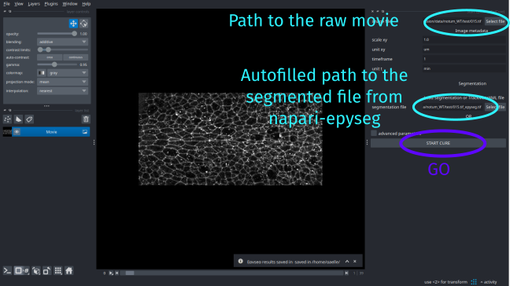
Click START CURE to start the process.
B2 - Track the cells
EpiCure creates cells from the binary segmentation results from EpySeg.
Press Control-C (Command-C on MacOS) two times to display the cells as contours only, and not full colored cell, to see better the signal behind. Note that if you press Control-D (Command-D on MacOS), you can decrease the cell contour size and get back to the fully colored cell when the contour reaches 0.
The Segmentation layer must always be selected in the left panel for the shortcuts to work
You can save the current display settings in Display to use it as default display
To save the current display settings (eg cells as contours, not full), go to Display panel and click Set current settings as default. Now when you open EpiCure it will use these settings as default visualization.
You can see that on the first frame, the segmentation is very bad as the signal is very noisy, but we get good results in all the other frames. Let's first delete all cells from the first frame to clean the segmenation.
B2a - Remove cells from the first frame
Go to the Edit panel, and select the ROI options interface.
It will expand the interface for this option (ROI=Region Of Interest).
Click Draw/Select ROI and select the rectangular selection in the top left panel interface that corresponds to the options linked to the ROIs layer.
Draw a rectangle around the all image.
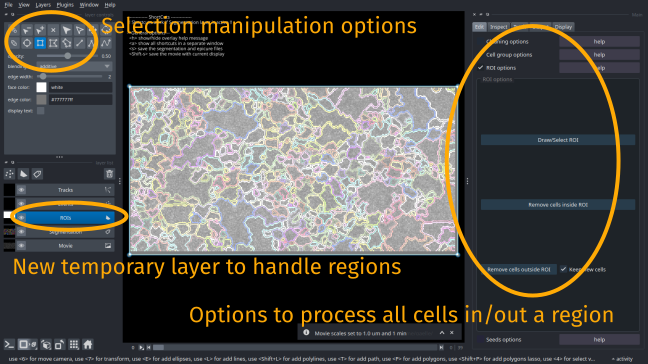
Click Remove cells inside ROI to delete all the cells inside the rectangle.
Check that Segmentation layer is the currently selected layer again when all cells are removed.
Save the correction by pressing s.
B2b - Track the cells
Select the Track panel in the right side interface to choose the options for tracking.
Select Laptrack-Centroids.
This option will track the cell by considering the position of their centroids and matching closest points in consecutive frames.
set Max distance to 20, Splitting cutoff (division probability) to 0.3 and Merging cutoff to 0 (track merging, this should not happen in an epithelia).
Unselect Add feature cost.
This could be used to add constraint on the tracking algorithm to try to match cells with similar area or shape in consecutive frames.
It can improve the tracking when cell shapes are close enough from one frame to another.
Click Track to launch the tracking.
Set up tracking parameters on a subset of frames
You can check the box Track only some frames and set the values of Track from frame and Until frame to perform tracking only on a few frames, to set up the parameters before to track the entire movie.
When the tracking is done, the cells will be colored with a unique color all along the same track.
The Track layer shows you the track as lines accross frames.
You can directly show it or hide it by pressing r when the Segmentation layer is selected.
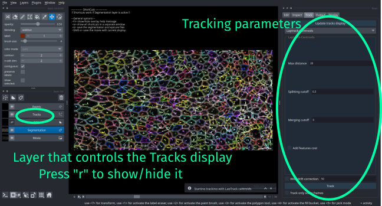
A few divisions should have been detected by the tracking algorithm, you can see them as blue dots.
B3 - Measure track properties
After doing the tracking, you can inspect and correct eventual segmentation or tracking errors. When this is done or if you don't need a perfect accuracy for your analysis, you can then perform measurement on the results directly in EpiCure.
To measure track properties, go to Output and select Measure track features.
Select All cells in Apply on parameter to measure all tracks at once.
Click Track features table to launch the measurement.
A table with one cell/track by row will be displayed in the right-side interface. Each column is a measured feature, as eg the total length of a track or its average velocity.
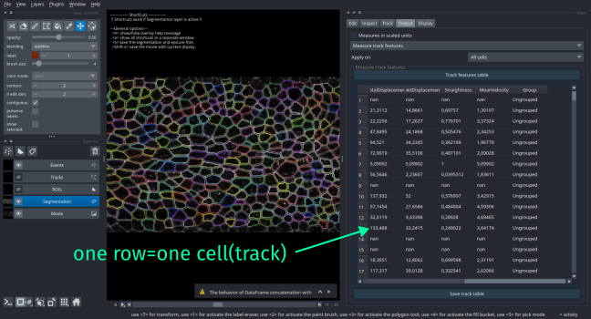
C - Correct a binary segmentation (skeleton)
This tutorial gives an example on how to load a binary segmentation, track the cells and correct the initial segmentation.
You can follow it with your own data, or using the test data available in the github repository, selecting the movie area3_Composite.tif and the corresponding segmentation (binary of the skeleton) area3_Composite_epyseg.tif.
C1 - Load and track the cells
Start Napari, and then EpiCure by going to Plugins>Epicure>Start epicure.
C1a - Load raw movie and binary segmentation
A panel opens in the right side, where you can select the raw movie by clicking the Select file button on the top right.
Chosse the raw movie (area3_Composite.tif).
The movie is loaded and the metadata are read and displayed in the right panel. Check that the extracted values are correct, or change them if necessary.
Here, the raw movie is a Composite movie (there are two stainings in the same movie).
Each color channel is loaded as a separated layer in napari, that you can see on the bottom left of the interface.
The layer that will be analysed by EpiCure will be called Movie and the other layers are called MovieChannel_i where i is the number of the channel in the raw movie.
In this example, the channel that contains the junction staining is the channel 1 and channel 0 (used by default) contains nuclei.
Then, set the parameter junction_chanel in the right side interface to 1, so that the visible layer called Movie now contains the correct staining.
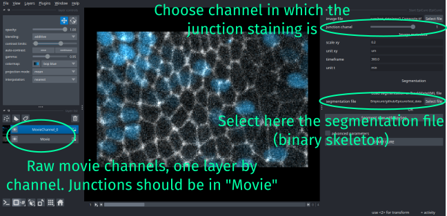
Then to load the segmentation, select the area3_Composite_epyseg.tif file in the segmentation_file parameter of the interface and click on Start cure.
The segmentation (a binary skeleton) will be transformed to a set of full cells, displayed as colors (labels).
C2a - Remove border cells
The cell that touch the border of the image are not entirely visible and are often disappearing/appearing and a source of errors. They can either be ignored in the processing or flag as border cells in the output table, or they can also be removed from the segmentation.
To remove cells that touch the border of the image, go to Edit panel and select the Cleaning options feature.
You can choose to remove the cells that are less than x pixels away from the border, where x is 1 by default (touching the border of the image) but could be increased if you want to remove more cells.
Click Remove border cells to get rid of these cells.
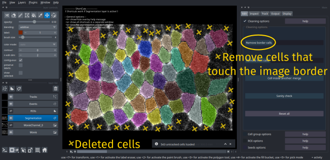
C3a - Track cells
To track the cells to help detect segmentation errors, go the Track panel and select Laptrack-Overlaps.
Set Min IOU to 0.1: this controls the minimum overlap between segmented cells from two consevutive frames to be allowed to be linked as the same cells.
Set Splitting cost to 0 to don't allow any division and Merging cost to 0 to not allow any merging of cells.
Click Track.
When it is finished, each cell is colored by its track and the Tracks layer contains lines to show the local trajectory of the cell.
You can show/hide this layer by pressing r.
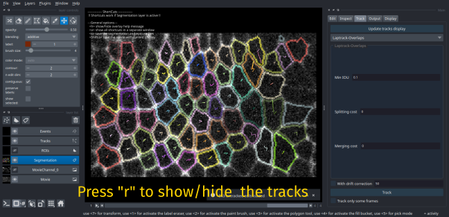
C2 - Correct segmentation errors
C2a - Detect potential errors
To automatically find potential segmentation errors, go the Inspect panel.
At this step, there should be no events (no suspects, no division, no extrusion), except if you used different parameters in the Tracking step.
Check the Track options feature, and unselect all options if some are selected.
Here, we will detect cell that have a sudden change of size.
For this, check the Size variation parameter, and set to 1, so that cell that have a change of area of at least once their size will be flagged.
Click on Inspect track, you should obtain 3 suspects, toward the end of the movie.
Press Space to navigate through these suspects point: the program will zoom on each suspect and display in the Terminal why each point was flagged as suspect.
C2b - Correct wrongly merged cells by splitting
If you check the two first suspects, you can see that they are raised by the same segmentation error that is the wrong segmentation of two cells (at frame 2 and 4) as one cell at frame 3.
To split the cell in two, go to frame 3, press Alt (Option on MacOS) and by keeping the right button of the mouse clicked, draw the separation line between the two cells. When you release the mouse button, two cells should apear.
The central cell should have been correctly relinked with the cell before and after. The second cell is not correctly relinked as you can see that in frame 3, a very small cell has been detected as this missing cell.
To unlink it to this track, press t to switch to track edition. Press Shift and do a right click on the small cell to unlink it to the previous cell and start a new track with this cell.
To now link the second cell that was wrongly linked to this small cell at frame 3, press t again to go to track edition mode. Do a left click on the cell at frame 3 to link with the same cell at frame 3 by doing a right click on it. Do the same to link the cell again from frame 3 to frame 4 (press t then left and right click on the cell on each frame).
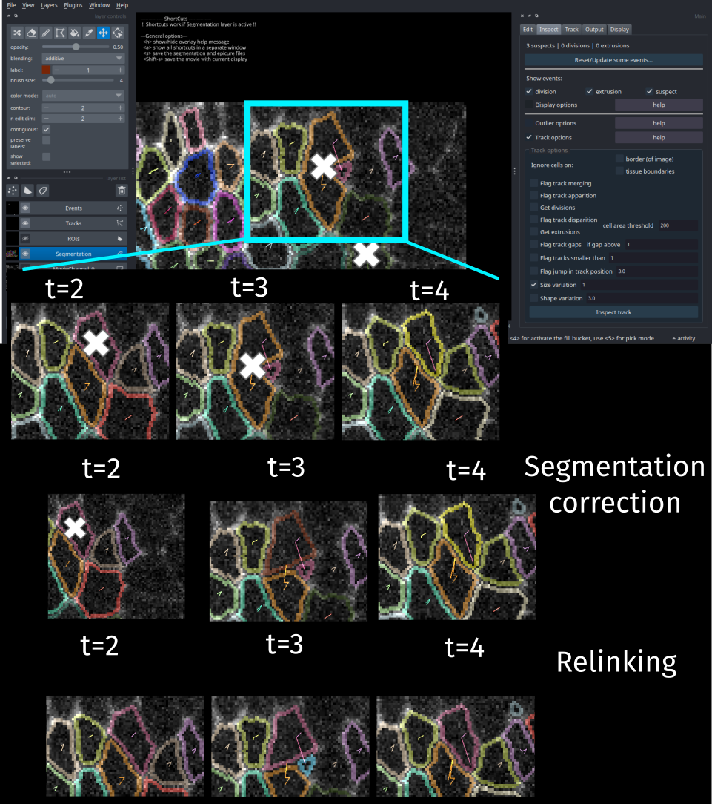
Go to Track panel and click on Update tracks display to update the Tracks layer with the changes made in this correction step.
Remove the corresponding suspects if some are left (should be automatically removed) by pressing Control+Alt (Command+Option on MacOS) and doing a right click on the suspect point.
The suspect that is left is another two cells that were also wrongly merged as one cell at frame 3. Do the same correction steps (splitting the cell, then correcting the linking) to correct it.
C2c - Correct wrongly splitted cell by merging
The very small cell at frame 3 that we unliked at the previous step seems to be part of the cell above it, wrongly splitted in two cells when looking at the movie.
To correct that, press Control> (Command on MacOS) and at the same time click with the left mouse button from the small cell to its main cell to merge these two cells as one. The track should be automatically reconstructed: check that the new merged cell has the correct label at the current frame and at the previous and next frames.
C3 - Export the skeleton
In this tutorial, the goal was to correct the skeleton of the movie.
For this, you can display it in Epicure by pressing k and you can save the Skeleton layer that will be added, or directly export it through the Output panel.
Go to Output panel, select Export segmentations and in that panel, choose skeleton in the parameter Save segmentation as.
Check that Apply on is set on All cells or set it otherwise.
This parameter is useful if you want to export only some cell segmentation (one cell, or a group of cell).